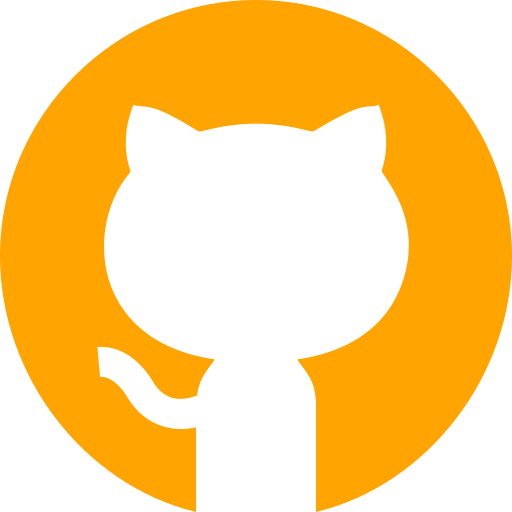

Avant la découverte de la programmation
Apprentie à l'école culinaire Ferrandi à Paris, j'y ai passé un CAP pâtisserie en alternance dans l'entreprise Dominique SAIBRON.
Par la suite je suis partie en Alsace faire un CAP cuisine à L'Auberge des Trois Vallées.
J'y ai appris énormément, dont la régularité, la ponctualité, un savoir faire mais j'ai aussi compris que ça n'était pas la voie qui me convenait.
Revenant sur Paris, pôle de formation et de rencontre, j'ai découvert l'univers du développement informatique.
Choix de formation
Après avoir entendu parler du monde de la tech, j'ai fait la piscine de 42 Paris afin de savoir si ce milieu me convenait. N'ayant pas été retenue, j'ai cherché une école portant certaines valeurs et Ada Tech School été celle qui m'a le plus intéressée.
Aujourd'hui apprenante dans cette école, je cherche une alternance en front d'octobre 2020 à fin juin 2021.
Contacts
gwenaelle.duchemin.pat@gmail.com